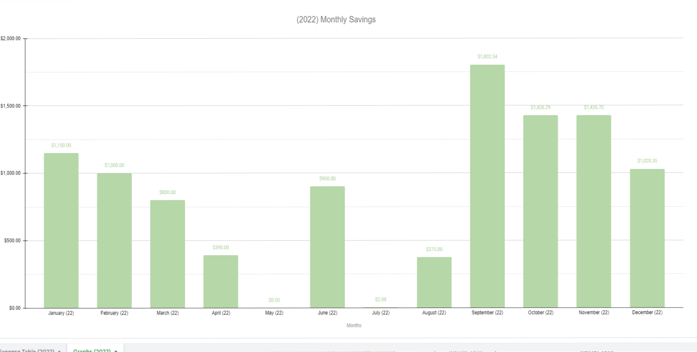

Pivot Table and Bar Chart in Excel.
This was a ad-hoc report formulated to analyse Fee Variance for Q1 and Q2 in a sector of operation. It outlines the instances where the Vitu Fee
Estimate provided was over or under what the DMV charged, how frequently it has happened each month, and a brief expanation of why it happened, plus what
is being done to fix it.
Data Cleaning, Organization, and Presentation in Excel.
Imported raw sales data in Excel, and organized information to compare fees apples to apples. The charts compare estimates charged by Vitu vs what the DMV charged, outlining their difference in green (overcharge) and red (undercharged).
Ad-hoc summary sheet displaying financial health across sectors.
This report was one of bi-annual reports made to show steakholders of financial health across sectors in all 50 states in the US. It's simple design outlines the number of sales in each state, accuracy percentage in estimating fees, weight of said sector in gross revenue, and more.
Organized Finanicial Report utilizing charts and tables to help organize and break down cost of living.

This organized report aims to help break down financial spending, income, and saving for anyone who utilizes it. The chart tracks progress using graphs to easily see progress month-to-month, alongside a detailed sectional breakdown of expenses and savings.